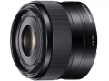

器材库 > APS画幅镜头 > E 35/1.8 OSS

详细规格
镜头类型
标准镜头
发布日期
2012-10-30
厂家推荐价格
55,650.00 （日元）
焦距
35mm
等效35mm画幅焦距
52.5mm
最大光圈
f/1.8
最小光圈
f/22
视角（对角）
44
镜头结构
8片/6组
光圈叶片
7片
最近对焦距离
30cm
最大放大倍率
0.15倍
滤镜口径
49mm
镜头卡口
Sony E
防抖
是
颜色
黑色
尺寸
63 x 45mm
重量
154g
liuqing2272014-04-07 00:424.83 分
操作性 5.00耐用性 5.00性价比 4.50解像力 5.00色彩还原 4.50机械结构 5.00
史亿刀2014-01-24 09:574.5 分
操作性 4.50耐用性 5.00性价比 4.00解像力 4.50色彩还原 4.50机械结构 4.50
kooco2013-10-24 15:403.67 分
操作性 5.00耐用性 3.50性价比 0.50解像力 4.00色彩还原 4.00机械结构 5.00
罗亚2013-10-06 13:123.58 分
操作性 4.50耐用性 4.00性价比 0.50解像力 4.50色彩还原 4.00机械结构 4.00
wangjue932013-07-16 06:494.17 分
操作性 4.50耐用性 4.50性价比 3.00解像力 4.00色彩还原 4.50机械结构 4.50
六月晚风2013-01-01 03:384.33 分
操作性 4.00耐用性 4.00性价比 4.00解像力 4.00色彩还原 5.00机械结构 5.00
独棹观星2012-11-02 01:164.75 分
操作性 5.00耐用性 5.00性价比 3.50解像力 5.00色彩还原 5.00机械结构 5.00
产品图 / 样片
评测 / 相关文章
- 标准视角 索尼E 35mm F1.8 OSS评测 （存档）
- ［试用］标准力量——索尼E35/1.8 （存档）
- ［试用］海外评测：索尼E 35/1.8 OSS （存档）
- ［资讯］索尼E 35/1.8 OSS今日发售 （存档）
- ［资讯］索尼公布三款E卡口新镜头发售日 （存档）
相关文章
- ［试用］标准力量——索尼E35/1.8 （存档）
- ［试用］标准视角 索尼E 35/1.8 OSS评测 （存档）
- ［试用］海外评测：索尼E 35/1.8 OSS （存档）
- ［资讯］索尼E 35/1.8 OSS今日发售 （存档）
- ［资讯］索尼E 35/1.8 OSS （存档）
- ［资讯］索尼公布三款E卡口新镜头发售日 （存档）
- ［试用］Nex7与35/1.8的里约大冒险 （原站已下线）